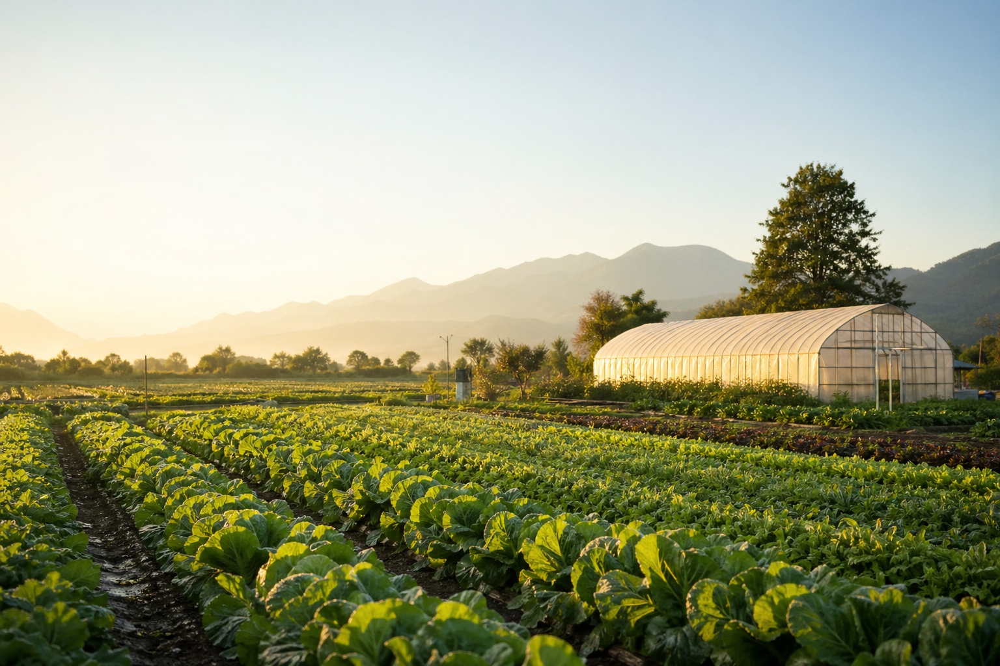

選択中の野菜
トマト
苗の活着を確認しながら、支柱立てと潅水量の調整を進めています。
現在の進捗
定植後・育成初期
作付け面積
0.45ha
収穫予定
6月中旬

Crop Status
選択中の野菜
苗の活着を確認しながら、支柱立てと潅水量の調整を進めています。
Our Focus
日々の作業内容、育成状況、参加型イベントを1つの報告ページに整理。予約ページでは、収穫体験・畑見学・農作業ワークショップの希望日時を選べます。
トマト、ナス、ピーマンの苗を定植。朝晩の温度差に備えて、トンネル資材と潅水ラインを調整しました。
スナップえんどうと新玉ねぎの収穫体験を実施。畑の観察メモを使って、野菜の生長も学びました。
有機質の補給とpH確認を行い、次作に向けて土の状態を整えました。
旬の葉物野菜を中心に、メニューに合わせた収穫タイミングを調整しました。
Monthly Flow